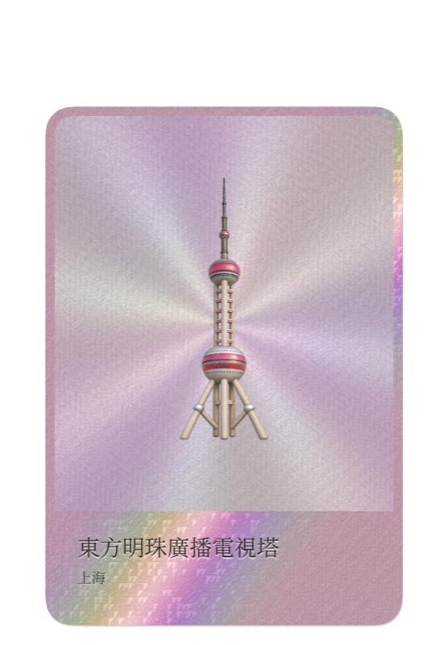
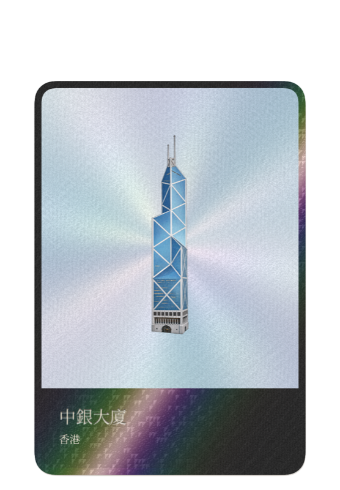
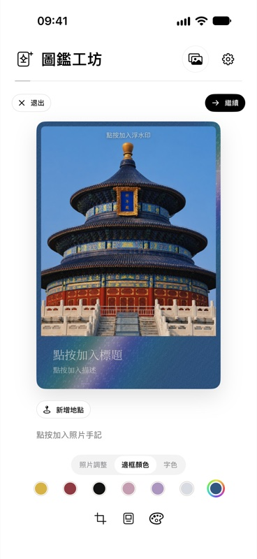
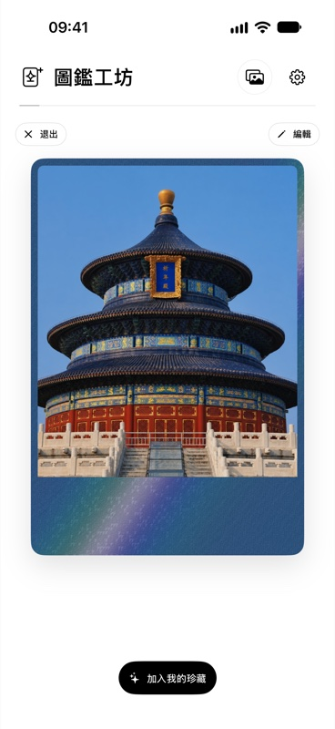
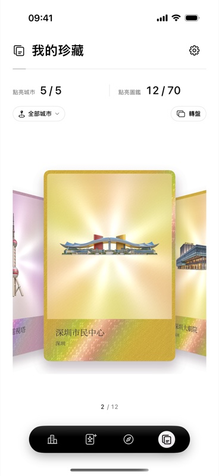
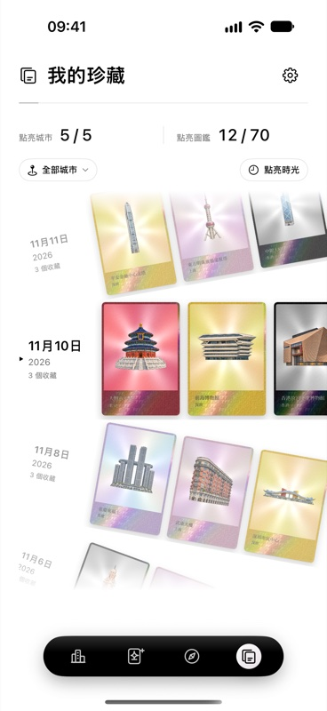

拍照點亮，解鎖剪紙
對準建築輪廓拍照，辨識成功後，剪紙圖鑑亮起，地標閃卡也會加入珍藏。你也可以從相簿選圖，或到地標附近用定位點亮。
對準地標輪廓拍一張照片，辨識成功後就能點亮圖鑑，把地標閃卡收進珍藏。
目前支援：北京 · 上海 · 深圳 · 香港 · 重慶


從天壇祈年殿到現代城市天際線，LumiFolio 用中國剪紙的視覺語言，串起建築、照片與城市記憶。無論你喜歡建築、城市攝影，還是卡牌收藏，都可以按自己的節奏探索。
對準建築輪廓拍照，辨識成功後，剪紙圖鑑亮起，地標閃卡也會加入珍藏。你也可以從相簿選圖，或到地標附近用定位點亮。
在圖鑑工坊選一張喜歡的照片，自訂邊框、文字和浮水印，把自己的閃卡加入珍藏。


在「我的珍藏」裡，用轉盤翻看收藏的閃卡，或切換到「點亮時光」，按日期回看旅途中點亮的地標。

